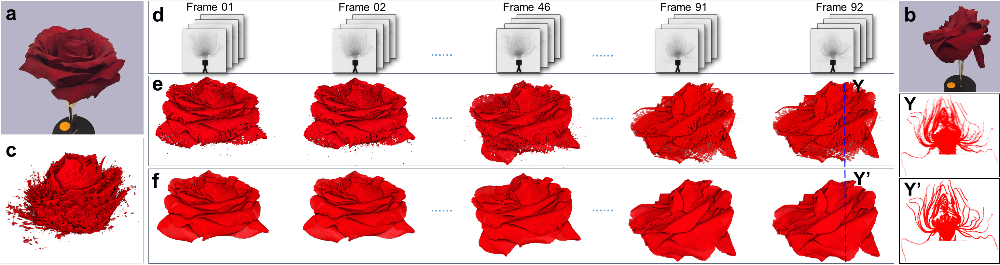

X-ray tomographic reconstruction of a rose undergoing
significant wilting during the scan due to loss of water. Images
(a) and (b) show photographs of the rose directly
before and directly after the scanning process. Traditional CT
reconstruction (c) from all 5520 projections in the scan
sequence show significant distortions due to misalignment of
features. When grouping the projections into 92 frames of 60
projections each (d), the deformation over each frame
becomes negligible, but now the number of projections per frame is
insufficient for high-quality reconstruction of the corresponding
volumes (e, Y). By comparison, our full space-time
reconstruction algorithm yields a time sequence of highly detailed
volumes for different time steps (f, Y').
Abstract
X-ray computed tomography is a valuable tool for analyzing objects
with interesting internal structure or complex geometries that are not
accessible with optical means. Unfortunately, tomographic
reconstruction of complex shapes requires a multitude (often hundreds
or thousands) of projections from different viewpoints, which can only
be achieved with mechanical motion. This significantly limits the
ability to use x-ray tomography for either objects that undergo
uncontrolled shape change at the time scale of a scan, or else for
analyzing dynamic phenomena, where the motion itself is under
investigation.
In this work, we present a non-parametric space-time tomographic method
for tackling such dynamic settings. Through a combination of a new CT
image acquisition strategy, a space-time tomographic image formation
model, and an alternating, multi-scale solver, we achieve a general
approach that can be used to analyze a wide range of dynamic
phenomena. We demonstrate our method with extensive experiments on
both real and simulated data.